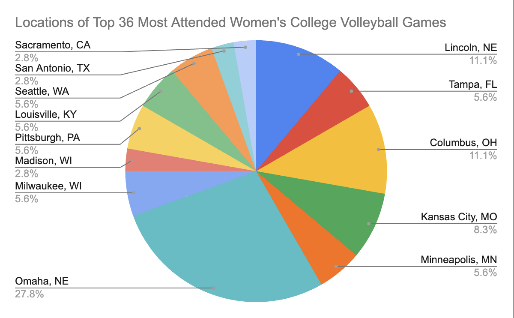
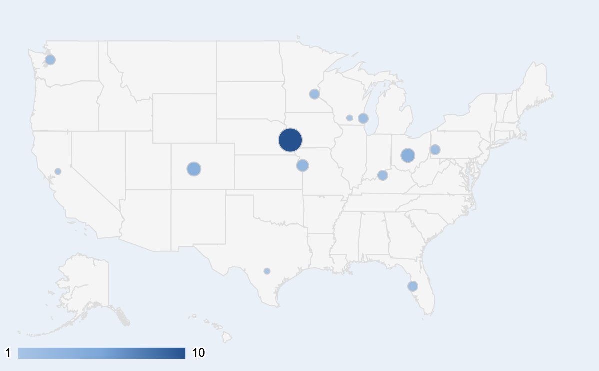

The Scalability of Women's NCAA Volleyball
By Isabel Wu | December 10, 2024

The game of women’s volleyball is perhaps one of the most entertaining, technical, and immersive sports to both compete in and enjoy as a spectator—coming from a die-hard volleyball fan and player. From its lightning-fast plays to intense rallies and crazy athleticism, the wow factor of women's volleyball is hard to top. In the past few years, women's NCAA DI has experienced an astonishing growth in popularity.
However, can the sport of college women’s volleyball dream to reach the heights of popularity adjacent to the high profile college football and basketball programs? Is it possible for women’s volleyball to become a game that can’t be missed on a Sunday night?
Viewership and Attendance
The following 8 teams, in no particular order, have been chosen based on their overall consistency of their performance in the annual NCAA DI women’s volleyball tournament in the last 7 years: Stanford University, University of Nebraska-Lincoln, University of Texas at Austin, University of Wisconsin, Penn State University, University of Florida, University of Pittsburgh, and Brigham Young University. Looking at the home game attendance in the NCAA DI women’s volleyball 2017-2018, 2018-2019, 2019-2020, and 2023-2024 seasons (omitting the seasons of 2020-2021 and 2021-2022 due to the effects of the COVID-19 pandemic on in-person attendance), we start to see a general trend.

Looking at the eight schools, the teams all seem to follow a general positive correlation other than Stanford and Penn State. Stanford’s attendance numbers were increasing from 2017-2020 and peaked in the 2019-2020 season, seemingly struggling in 2022-2024 to reach pre-pandemic attendance levels, while Penn State’s attendance peaked in 2017 and remained relatively stable in the seasons after. Nebraska is a clear outlier, consistently garnering the largest attendance numbers out of all the schools and experiencing a 53.9% increase in attendance from the years 2022-2023 to 2023-2024. After taking the average of the attendance amongst all schools, the growth is more clear.

The cumulative average home game attendance for the colleges listed above shows the average number of people attending each volleyball game from 2017-2024.
The average attendance increased from 3,789 in 2017-2018 to 5,003 in 2023-2024, reflecting a general upward trend in fan engagement and interest in women’s volleyball. The graph demonstrates a strong quadratic correlation (R^2 = 0.869), indicating that the relationship between the year and average attendance follows a curved, upward parabolic trend.
The overall growth rate from 2017-2018 to 2023-2024 is approximately 32%, with steeper increases observed in the last two seasons. After the omitted COVID-19 seasons (2020-2022), attendance rebounded strongly, suggesting both a recovery in fan interest and the expanded efforts to grow the sport's audience.
The Geographical Factor
The factor of location plays an important role in the overall popularity of a sport, and when considering the growth of women’s college volleyball and its ability to scale in size, geography is a critical factor in observing its trends.
The pie chart above represents the locations of the top 36 most attended women's college volleyball games in the United States, illustrating regional popularity and fan engagement. Cities like Omaha, Lincoln, Columbus, and Kansas City collectively dominate over half the chart, showcasing the Midwest as the heart of women’s volleyball in the U.S.
The state of Nebraska accounts for 38.9% of the most attended games (14/36 games), indicating an exceptional concentration of interest in women’s volleyball in this area. Nebraska is a clear hub for women’s volleyball, and it's telling that cities like Omaha and Lincoln outperform major metropolitan areas, reflecting the power of deep local community support.
All-time Attendance Records
The top three all-time attendance records for college women’s volleyball were all shattered in 2023, a historic year for women’s volleyball. Prior to 2023, the record attendance for a women’s volleyball game occurred on Dec. 18, 2021, when 18,755 people watched Wisconsin defeat Nebraska at the Nationwide Arena in Columbus, Ohio in the NCAA final.
Since then, the standards have been raised, with Nebraska defeating Pitt and Texas defeating Wisconsin in the NCAA semifinals being watched by 19,598 people and Texas defeating Nebraska for the NCAA championship title in front of a 19,727-person crowd.

The most obvious outlier that has helped contribute to this growth in women’s volleyball is Nebraska, a volleyball powerhouse that has established their dominance in the sport as well as their loyal fanbase.
On August 30, 2023, five-time NCAA champion Nebraska defeated Omaha at Memorial Stadium in Lincoln, Nebraska in front of 92,003 spectators, annihilating the attendance record for not only the Memorial Stadium itself (home of Nebraska football) but also the sport of women’s college volleyball and the world record for women's sports attendance in general.
This record in attendance was followed by another broken record for TV viewership of women's college volleyball. The 2023 championship match between Texas and Nebraska was the first ever NCAA volleyball championship to be broadcast on ABC. The game averaged 1.7 million viewers, peaking at 2.1 million viewers, a 115% increase from the 2022 championship match's viewership of 786,000 according to ESPN.
The success demonstrated by these historical volleyball games has not only solidified Nebraska's status as a cornerstone of women's volleyball but also highlighted the growing nationwide interest in the sport. This widespread exposure to the game of women's volleyball to audiences nationwide—through the power of broadcasting—contributes to the broader visibility of women’s sports, demonstrating the potential for future growth in viewership and attendance.
Such milestones underscore the importance of investing in women’s athletics. With proper visibility and infrastructure, women's college volleyball can attract record-breaking audiences and foster thriving fan communities. The past few years for women’s NCAA volleyball have proved the sport to be something mainstream—now we just sit back and watch.
Sources